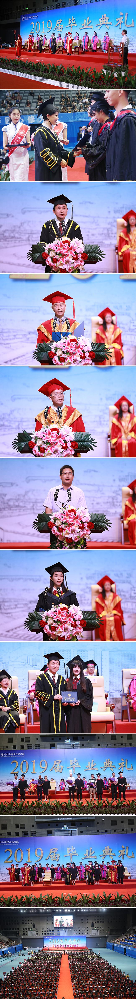

7月3日下午，我校举行2019届毕业典礼。校领导刘锦、孙湧、张武、姚学清、吴跃文出席典礼。各二级学院负责人、相关职能部门负责人、辅导员、家长代表及900名毕业生代表参加典礼。校党委委员、副校长吴跃文主持毕业典礼。
毕业典礼在国歌声中拉开帷幕。校党委书记刘锦为优秀毕业生代表颁发荣誉证书，校党委委员、副校长姚学清宣读了学校表彰优秀毕业生的决定。2019届优秀毕业生代表计算机学院蔡瑞娟同学发表了毕业感言，交通与环境学院汪洋副教授代表教师发言。
孙湧校长以“自信自强自立 做新时代的奋斗者”为题，为毕业生上“最后一课”。他向2019届4554名毕业生表示祝贺，并向毕业生家长、全体教师、全体工作人员表示感谢。
孙湧校长充分肯定了2019届毕业生在校期间取得的优秀成绩，也回顾了学校过去三年实现高质量发展的重要成果：学校荣获国家优质高职院校认定、省“一流校”建设项目立项。“2188创客空间”被评为国家级众创空间。“中德学院”也已有两届273名在校生。共建“湾区中德教育与经济协同发展示范基地”。学校发起成立“粤港澳大湾区职业教育产教联盟”，积极推动湾区职业教育融合发展。学校实现全日制国际留学生培养零突破。此外，学校精神文明和思想建设也成绩出色，荣获深圳市文明单位称号，软件学院获教育部“全国党建工作标杆院系”立项，成为全国1400多所高职院校中唯一入选的高职院系。
对圆满完成学业、即将开始广阔天地的驰骋的2019届毕业生，孙湧校长以“自信自强自立 做新时代的奋斗者”为题，送给毕业生三个人生关键词。第一个关键词：自信。自信是一种宝贵的品格，是一种不屈不挠的精神状态。只有自信的人才能正确认识自己、客观看待别人。他希望同学们有“天生我材必有用”的自信，有“会当凌绝顶，一览众山小”的豪情，永保自信，永远向前。第二个关键词：自强。自强是努力向上，是对美好未来的无限憧憬和不懈追求。他希望同学们秉承勇于创新的深圳城市之魂，迎接当今世界百年不遇大变局之挑战，勇做担当者，自强不坠青云之志，脚踏实地，百折不挠，与国家富强、民族振兴共成长，一步一个脚印，向着心中的梦想迈进。第三个关键词：自立。自立是安身立命之本，只有自己能够独立生存，才能更好地创造、实现自己的价值。他希望同学们努力锻造能够适应复杂社会环境的本领，依靠自己的能力立足于社会，实现自己的抱负。
最后，孙湧勉励全体毕业生：不忘初心，认真走好社会人生第一步，坚持自信自强自立，做新时代的奋斗者、引领者。我相信，你们一定会带着深信人的自信和荣光，勇担使命、直面挑战、把握未来、再创辉煌！
致辞后，孙湧校长为毕业生代表一一颁发毕业证书，并与大家合影留念。（校长办公室，于海风）